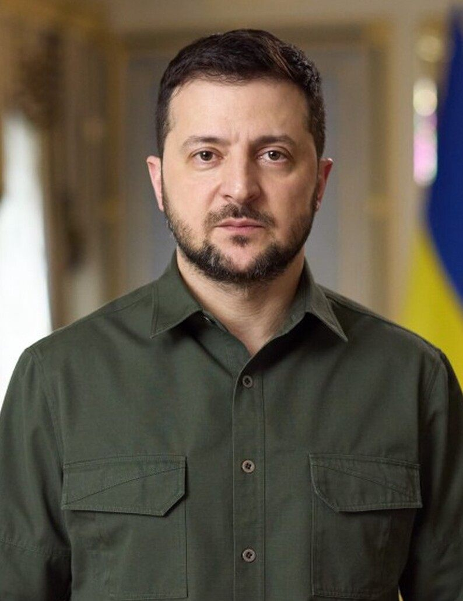

핀란드 대통령, 우크라이나·러시아에 ‘60일 정전’ 촉구
핀란드 대통령이 우크라이나와 러시아에 60일간의 정전을 제안하며 협상 동력을 살리자고 했다. 그는 우크라이나의 전선 상황이 비교적 안정적이어서 협상에 유리하다고 평가했다.
정가호 기자 · 2026.06.30
橋국제

자유시보(自由時報)에 따르면 핀란드 대통령은 우크라이나와 러시아가 60일간 교전을 멈추고 그 기간에 본격 협상에 나설 것을 촉구했다. 그는 현재 우크라이나의 상태가 ‘양호’해 협상에 유리하다고 진단했다.
광고 문의 · 300×250정전 제안은 전선의 소강을 협상의 기회로 전환하자는 구상이다. 다만 양측의 신뢰가 낮고 영토·안전보장 등 핵심 쟁점이 남아 있어 실제 합의로 이어질지는 불투명하다.
유럽 국가들은 전쟁의 장기화에 따른 에너지·재정 부담을 우려해 외교적 출구를 모색해 왔다. 핀란드는 러시아와 긴 국경을 맞댄 나라로, 안보 현실에 밝은 중재자로 평가된다.
정전이 성사되더라도 이행 단계의 검증과 감시가 관건이다. 과거 사례에서 보듯 선언과 실제 이행 사이에는 큰 간극이 있다.
한국을 비롯한 아시아 경제에도 이 전쟁은 곡물·에너지 가격을 통해 영향을 미쳐 왔다. 정전 논의의 진전은 글로벌 물가 안정에도 변수가 된다.